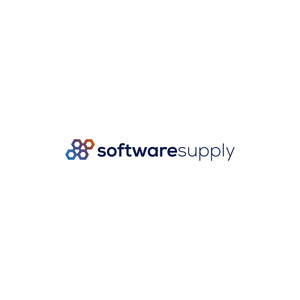

Trade Mark Journal No.2025/009 28 February 2025
UK00004161714 18 February 2025 (9)

- Class 9
- Software; Software testing software; Software reliability software; Computer software; Collaboration software platforms [software]; Computer software packages; Antivirus software; Software for computers; Enterprise software; Antispyware software; Plugin software; Computer software development tools; Workflow software; Software applications; Computer software applications; Multimedia software; Antimalware software; System software; Bioinformatics software; Programming software; Debugging software; Computer antivirus software; Computer software for computer aided software engineering; Downloadable computer software; Computer application software; Compiler software; Software compiler; Computer software platforms; Encryption software; Server-side software; Application software; Computer e-commerce software; Computer software programs; Networking software; Hardware testing software; Graphics software; Interface software; Computer telephony software; E-commerce software; Computer software for encryption; Telecommunications software; Computer software applications, downloadable; Downloadable computer software applications; Downloadable software; Editing software; Computer hardware for use in computer-assisted software engineering; Simulation software; Computer programming software; Computer interface software; Business software; Platform software; Cryptography software; Server software; Operating software; Accounting software; Downloadable computer security software; Computer operating software; Smartphone software; Programs (Computer -) [downloadable software]; Computer programs [downloadable software]; Software suites; Gaming software; Publishing software; Intranet software; Computer firewall software; Embedded software; Downloadable computer utility software; Security software; Computer software for advertising; Downloadable computer software for blockchain technology; Hardware reliability software; Optimisation software; Music software; Computer graphics software; Educational computer software; Mobile software; Manufacturing software; Diagramming software; Software development tools; Utility software; Computer software [programmes]; Communications software; Software for smartphones; Testing software; Animation software; CAD software; Biometric software; Computer software for database management; Computer game software; Downloadable software applications; Electronic device software drivers that allow computer hardware and electronic devices to communicate with each other; Software related to handheld digital electronic devices; Software for processing digital images; Digital tablets; Digital telephone platforms and software; Digital televisions; Digital cameras for industrial use; Digital phones; Digital multimeters; Digital amplifiers; Digital media streaming devices; Computer software for use on handheld mobile digital electronic devices and other consumer electronics; Digital sensory devices; Digital electronic controllers; Electronic digital signboards; Digital signage; Analogue to digital converters; Digital to analogue converters; Digital cameras; Digital solutions provider [DSP] software; Digital notepads; Downloadable digital assets; Wearable digital electronic communication devices; Portable digital electronic scales; Computer software for processing digital images; Digital multi-meters; Digital books downloadable from the Internet; Digital radios; Computer software for the display of digital media; Digital audio servers; Digital sensors; Software for Digital Distributed Storage; Digital telephones; Digital recordings; Digital storage media; Audio digital discs; Downloadable digital photos; Digital color printers; Downloadable digital music; Digital colour printers; Digital graphic scanners; Digital music downloadable from the Internet; Digital boards; Digital video discs; Digital projectors; Digital transmitters; Wearable digital electronic devices capable of providing access to the Internet; Digital video cameras; Digital signage monitors; Digital audio players; Digital dashboard software; Digital colour printers for documents; Digital video servers; Digital audio tapes; Audio digital tapes; Remote controls for electronic products; Digital potentiometers; Digital audio recorders; Digital sound processors; Downloadable computer software for use as a digital wallet; CAE software; USB operating software; Computer application software for TV; 3D computer graphics software; Office software; Software for tablet computers; Computer software downloaded from the internet; Computer software downloadable from the internet; AI software; Downloadable computer software for use as an application programming interface (API); Computer application software for use in implementing the Internet of Things [IoT]; Desktop publishing software; Computer software for use as an application programming interface (API); Application software for smart TV; Software downloadable from the internet; Computer gaming software; Games software for use with computers; Media server software; Computer software for document management; BIOS software; Computer games programs downloaded via the internet [software]; Computer games software; Mail server software; Downloadable cloud computing software; 3D animation software; Computer game software downloadable from a global computer network; Extranet software; Cloud server software; File server software; GPS software; Downloadable computer game software; Computer game software, downloadable; Netbook computers; Office suites [software]; Web server software; Computer software downloadable from global computer networks; Computer software for the creation of firewalls; E-mail software; Computer software programs for spreadsheet management; Computer whiteboard software; Customer relation management [CRM] software; Print server software; Downloadable email software; Downloadable computer game software via a global computer network and wireless devices; Downloadable computer software for the management of data; Software development kit [SDK]; Computer software for the administration of on-line games and gaming; Computer software for education; Computer software for mobile phones; Proxy server software; Media software; Computer groupware; Enterprise application software [EAS]; Computer application software for mobile phones; Computer software supplied on the Internet; Computer software supplied from the Internet; Computer games programmes downloaded via the internet [software]; Desktop computers; Add-in cards for micro computers; Cloud computing software; Computer software downloadable from global computer information networks; Computer software for entertainment; Search marketing software; Downloadable computer software for the management of information; PDAs; USB web keys; Downloadable application software for smart phones; Operating computer software for main frame computers; Global positioning system [GPS] computer software; Computer hardware modules for use with the Internet of Things [IoT]; Web application and server software; Computer search engine software; Enterprise content management [ECM] software; Internet messaging software.
ecokeys LLC